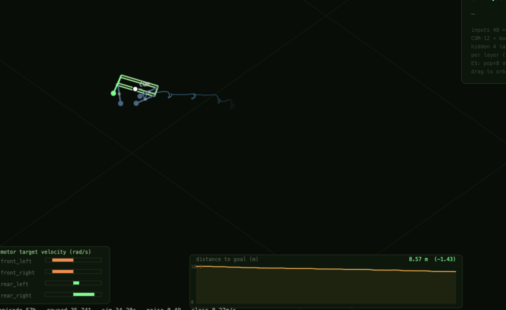
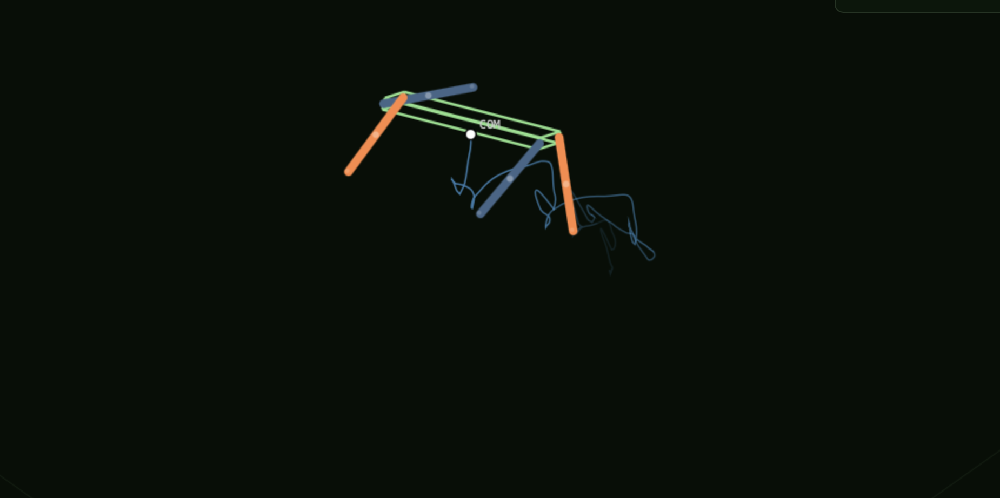
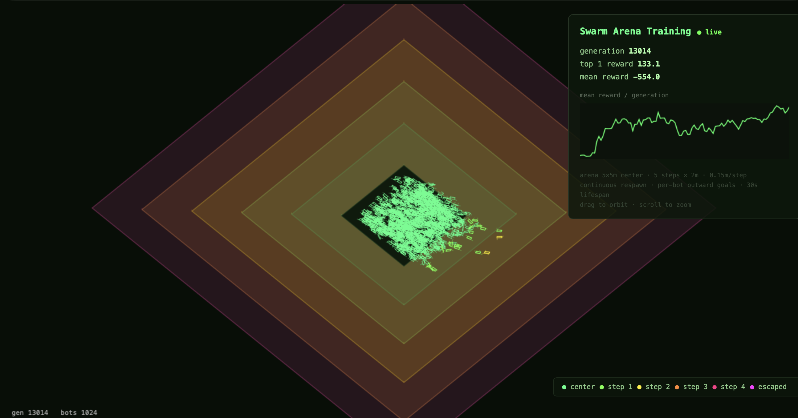

AI Quadruped
A simulation and training environment for a quadruped robot, pairing a physics-based world model with a spiking neural network brain. The goal is to develop a bio-inspired controller that can explore and learn from its environment — and eventually transfer to real hardware.


Overview
I was perusing robots online and came across the KT2 Kungfu Turtle. I was inspired by its capabilities and physical simplicity. This, I decided, would form the foundation of my next project. My goal was to use it as a kit to train and test neural networks. I have been toying with different models to understand them better, optimize performance, and explore novel ways of the robot learning about its environment.
Simulation and Modeling
I started by creating a physical simulation of this robot. I modeled the body as a rectangular prism and the legs as cylinders with spherical tips for feet. The body was modeled to be slightly elastically deformable in order to avoid negligible surface areas for floor contact.
I made the legs each have ¼ of the mass of the body, and set the center of mass of each component to their respective centroids. I then set coefficients of static and dynamic friction between the bot and the floor of our arena to capture the dynamics of the bot moving across the floor.
I added gravity to the system and allowed the motors to control the legs. I modeled each component's forces relative to each other and to the environment, so that spinning the motors that control the legs will accelerate the robot.
Spiking Neural Network Approach
My goal for this robot is to develop a bio-inspired brain that can explore and learn from its environment. Eventually I plan to have a larger series of coordinated neural networks that represent and perform functions similarly to the regions in a dog's brain.
Phase one of this involved developing a four-layer spiking neural network with a shared trunk. This allows each of the motors to function independently while coordinating with the other motors for coherent movement.
I designed this so it can either be trained headlessly (very slowly) locally, or much more rapidly with Nvidia H100 GPUs that I rent from Runpod when I want to iterate faster.
Display
The frontend is a React viewer. It can visualize either your current best model solo, which is being rewarded for navigation towards a given point:

Or you can watch the entire swarm train, with a simplified UI for rendering purposes:

Next Steps
Mechanical
I have reached out to the people who created the KT2 Kungfu Turtle to inquire about the capabilities of its microcontroller. Depending on what I learn, I will either buy one of their robots, or build my own that is similar, slightly larger, and runs on a Raspberry Pi (with a hat).
Although I tried to simulate the world accurately, my "robot brain" is tested and trained on an environment that does not perfectly mimic all of the complexities that come with navigating real-world surroundings. I am eager to test my work on hardware to learn from these differences and identify where I need to update my model to better mirror the real world.
Software
I have a handful of ideas I want to play with and test out in the future:
- I want to hardwire a handful of capabilities into separate functions (e.g. run, trot, roll over, etc.), then add a task selection layer and train a model to navigate simple obstacle courses.
- I want to have separate interconnected networks representing different regions of a dog's brain that control the bot instead of one network. I would likely use a variation of my current model as the motor cortex.
- I want to test existing models on versions of quadrupeds with similar but varied parameters (e.g. super short legs, a more springy material, etc.) to learn how dependent my model is on this specific robot, or if it could be useful for a wider range of applications.